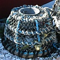

|  |
| Jèrriais | Angliais |
| un chancre | Guernsey crab, chancre |
| eune chouque | lobster (larger than normal) |
| un couotheux | type of lobster |
| eune crabe | generally refers to Guernsey crab, chancre |
| eune crabiéthe | place where crabs are found/fished |
| du crabîn | small crabs in general |
| eune crabe à co | crayfish, rock lobster |
| eune crabe grégeaise | lady crab, velvet fiddler, swimming crab |
| eune rouoge crabe | wrinkled crab |
| eune vèrte crabe | shore crab |
| des d'mouaîselles | species of small crab |
| eune d'mouaîselle | lady crab, velvet fiddler, swimming crab |
| eune êcrelle | freshwater shrimp, scaly lobster |
| eune êcrévette | langoustine, Norway lobster |
| eune êcrévisse | scaly lobster, squat lobster |
| eune fouaitheuse | shore crab |
| eune franche crabe | edible crab (young, female) |
| un critchet | lobster (small) |
| un quart | lobster (quarter size) |
| un d'mi | lobster (half size) |
| un honmard dé prix | lobster (full size) |
| un houais, un ouais | Guernsey crab |
| eune lipotte | burrowing prawn |
| eune mouaithe | lobster (female) |
| eune pihangne | spider crab |
| un poingclios, un pouaingclios | Guernsey crab |
| un p'tit poingclios | young Guernsey crab |
| un trapenard | four-horned spider crab |
| un tréhar | slender-legged spider crab |
| eune vielle, eune vielle crabe | wrinkled crab |
| i' sont ès hueûlîns |
they're out spider crab fishing (also: talking loudly to each other in public) |
| i' faut êt' hueûlîn d'avant êt' crabe | learn to walk before you run |
| un mousseux | spider crab |
| eune mousseûthe | spider crab |
| un moussu | spider crab |
| un hèrmite, eune hèrmite | hermit crab |
| eune lorme | hermit crab |
| un soudard | hermit crab |
| eune molle crabe | edible crab (young, female) |
| eune couôrrêsse | common shore crab |
| un grégeon | lady crab, velvet fiddler, swimming crab |
| d'la grosse chèrvette | prawns |
| d'la p'tite chèrvette | shrimps |
| du chèrvîn | species of shrimp |
| les pouls | crab gills, dead man's fingers |
| les pouettes |
crab claws, front legs of crustacean; crab gills, dead man's fingers |
| les pouèrs | crab gills, dead man's fingers |
| eune pouette | crab claw, front leg of crustacean |
| eune pînchette | pincer of crab, lobster |
| la crînque | carapace |
| la cruque | carapace |
| les cruques | remains of crab, lobster shell after eating |
| un cliavé | lobster pot |
| la chambre, les chambres | body of crab, minus pincers and shell |
| lé vanné | carapace |
| cliav'ter | check on lobster pots |
| marânder | check on lobster pots |
| un banâtre | old-fashioned type of lobster pot |
| eune cocombre | female lobster that has lost claws |
| la noe (d'un cliavé) | opening of lobster-pot |
| la dgeule (d'un cliavé) | opening of lobster-pot |
| eune crabe êpouss'térêsse | yeti crab |
| eune chèrvette dé pèrtu | vent shrimp |
Viyiz étout: